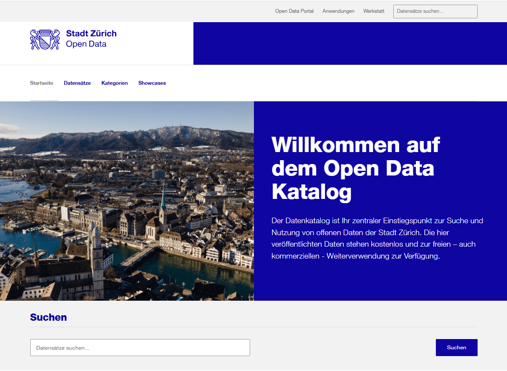

Was ist Open Government Data?
Open Government Data (OGD) sind Verwaltungsdaten, die von der Stadt Zürich der Öffentlichkeit frei zugänglich gemacht werden. Die Daten können von allen — Bürger*innen, Unternehmen, Forschenden, Medien — kostenlos und ohne Einschränkungen genutzt werden.
Im Open-Data-Katalog finden Sie die offenen Daten der Stadt Zürich. Der Datenbestand wird laufend erweitert und auf aktuellem Stand gehalten. Die Daten werden detailliert mit Metadaten beschrieben und in unterschiedlichen offenen und häufig verwendeten Datenformaten angeboten.

So finden Sie offene Verwaltungsdaten der Stadt Zürich
In 3 Schritten zum Datensatz
- Katalog öffnen — Gehen Sie zu data.stadt-zuerich.ch und nutzen Sie die Suchfunktion, stöbern Sie in den Datensätzen oder Kategorien.
- Datensatz auswählen — Jeder Datensatz ist mit Metadaten beschrieben: Titel, Beschreibung, Publisher, Tags, Aktualisierungsintervall und Lizenz.
- Daten nutzen — Laden Sie die Ressource im gewünschten Format herunter oder nutzen Sie die API für den direkten Zugriff.
Jetzt den Katalog durchsuchen
Der Datenkatalog ist Ihr zentraler Einstiegspunkt zur Suche und Nutzung von offenen Daten der Stadt Zürich.
data.stadt-zuerich.ch öffnenMerkmale des Katalogs
Ohne Nutzungseinschränkungen
Alle Datensätze unter offener Lizenz — frei nutzbar, teilbar und weiterverarbeitbar.
Kostenlos
Alle Daten stehen gratis zur Verfügung — für kommerzielle und nicht-kommerzielle Nutzung.
Laufend aktualisiert
Der Datenbestand wird laufend erweitert und auf aktuellem Stand gehalten.
Ausführliche Beschreibungen
Jeder Datensatz enthält detaillierte Metadaten zu Inhalt, Herkunft und Aktualisierung.
Über 900 Datensätze in vielen Kategorien

Umwelt
276 Datensätze

Bevölkerung
222 Datensätze

Bauen und Wohnen
194 Datensätze

Verwaltung
132 Datensätze

Basiskarten
134 Datensätze

Mobilität
123 Datensätze

Volkswirtschaft
59 Datensätze

Politik
43 Datensätze
Verfügbare Datenformate
Weitere Informationen zu Open Data, Anwendungsbeispiele und gesetzliche Rahmenbedingungen finden Sie auf stadt-zuerich.ch.